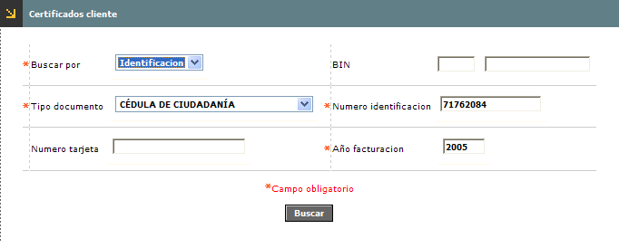
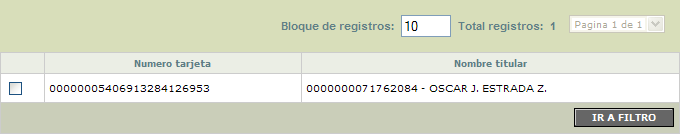

Generación certificados clientes
Este formulario le permite a la entidad generar los certificados de retención en la fuente para los clientes tarjeta habientes.
Al ingresar al formulario se despliega un filtro que le permite al usuario seleccionar los criterios para consultar los clientes a los cuales se les requiere generar el certificado.

Descripción de campos
Buscar por |
Campo obligatorio tipo combo, en el cual se selecciona entre Identificación, Tarjeta o Bin el criterio que se desea utilizar para consultar la información de los clientes. |
Bin |
Si en el campo buscar por se ha seleccionado la opción Bin, este campo se convierte en obligatorio y habilita la lista de valores de la cual el usuario puede seleccionar el bin para el cual se desea consultar la información |
Tipo de documento |
Este campo que se convierte en obligatorio cuando el criterio de búsqueda es la identificación, contiene un combo en el que se debe seleccionar el tipo de documento de identificación correspondiente a los clientes que se requiere consultar. |
Número de identificación |
Campo que se convierte en obligatorio cuando el criterio de búsqueda es la identificación, y en el que se registra el número del documento del cliente para el que se requiere efectuar la consulta. |
Número de tarjeta |
Si en el campo buscar por se ha seleccionado la opción Tarjeta, este campo se convierte en obligatorio y permite ingresar el número de tarjeta específico para el que se requiere efectuar la consulta. |
Año facturación |
Campo obligatorio en el que se indica el año para el cual se desea hacer la consulta de las retenciones practicadas a los clientes. |
Una vez ingresados los criterios para la búsqueda, se despliega un wizard de dos pasos. En la primera página se muestran el número de tarjeta y el nombre de cada uno de los clientes que coinciden con los criterios ingresados y para los cuales existe información para generar el certificado de retención en la fuente.

El formulario cuenta con un campo en el cual se marcan aquellos registros para los cuales se desea generar efectivamente el certificado y contiene además con un botón que permite seleccionar todos los registros.
Una vez seleccionados los registros, el usuario se desplaza a la segunda página del wizard en la cual se muestra un formulario con el resumen de los establecimientos para los cuales se va a generar el archivo con los certificados; este formulario contiene el nit, el nombre del establecimiento y una casilla para marcar aquellos registros a los cuales no se les va a generar certificado.
La segunda página del wizard contiene un botón especial a través del cual se genera el archivo para los establecimientos.
Botones especiales
Seleccionar todos : botón ubicado en la primera página del wizard y que permite seleccionar simultáneamente todos los registros encontrados por la búsqueda, sin importar si se encuentran o no visibles para el usuario en el formulario.
Generar archivo : botón ubicado en la segunda página del wizard y que permite generar el archivo para imprimir los certificados de retención en la fuente para los registros seleccionados por el usuario.